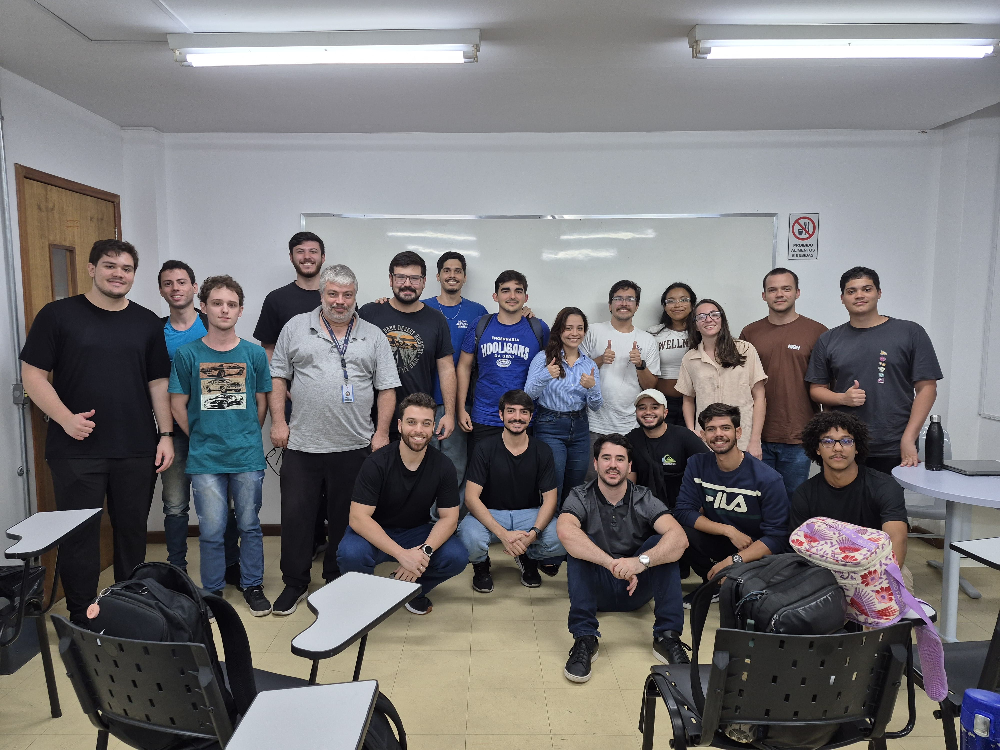
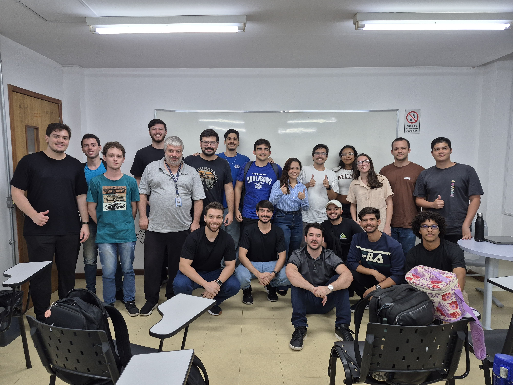

Quarter Mile BAJA UERJ
A Equipe Quarter Mile Baja UERJ é uma equipe da Universidade do Estado do Rio de Janeiro (UERJ), fundada em 1998, com o objetivo principal de desenvolver e construir um veículo Mini Baja para competições, integrando ensino, pesquisa e extensão.
Conheça a EquipeNossa Equipe

Caio Amaral
Capitão
Gerente de Gestão

Mara Guimarães
Vice-Capitã
Gerente de Estrutura

Giulia Costanza
Gerente de Freio

Bernardo Ximenes
Gerente de Suspensão e Direção

Bernardo Campanelli
Gerente de Suspensão e Direção

Orlando Pereira
Gerente de Elétrica e Eletrônica

Pedro luca
Gerente de Transmissão

Leonardo Bigogno
Gerente de Transmissão
Anne Rodrigues
Gerente de Marketing

Equipe
Membros
Estrutura
A estrutura do nosso veículo, também conhecida como chassi, é projetada para ser leve e extremamente resistente. Utilizamos materiais de alta performance e softwares de simulação para garantir a segurança do piloto e a integridade do carro sob as condições mais severas das competições.
Suspensão e Direção
Sistema responsável pela elaboração da suspensão e sistema de direção do carro. Desde o planejamento da geometria (escolhendo pontos de fixação no chassi e dimensionando as peças), até simulações por Software (analisando parâmetros, a fim de otimizar o sistema) e sua fabricação. O projeto de suspensão vai além do conjunto mola e amortecedor, impactando diretamente na capacidade de fazer curvas, absorção de impactos e estabilidade do carro. Pontos cruciais em um veículo off-road de performance.
Transmissão
Powertrain é o subsistema responsável pelo coração do minibaja, o motor. Este subsistema atua em tudo que se encontra entre o motor e as rodas do minibaja, e com um objetivo bem definido: Possibilitar que o motor empurre o carro com o máximo de performace possível. Para atingir esse objetivo projetamos e construimos todas as peças que levam a potência do motor até as rodas.
Freio
Responsável pela redução gradual da velocidade, o sistema de freio é um dos principais componentes de segurança do nosso Baja. Sua importância nas competições é tão grande que, no Baja SAE, existe uma prova eliminatória dedicada exclusivamente a ele, exigindo que as quatro rodas travem de forma eficiente e simultânea para que o veículo seja aprovado. Optamos pela utilização do freio a disco pela sua alta eficiência e pela facilidade de manutenção, permitindo ajustes rápidos durante a competição.
Eletrônica
A eletrônica embarcada é o cérebro do nosso carro. O sistema coleta dados em tempo real, como velocidade, rotação do motor e temperaturas, permitindo que a equipe analise a performance durante os testes e competições para realizar ajustes precisos e tomar decisões estratégicas.
Competições
Baja SAE Brasil
O BAJA SAE BRASIL reúne as melhores universidades de engenharia do Brasil, cada uma forma uma equipe composta de professores e estudantes de graduação em engenharia. Anualmente ocorrem duas etapas, uma regional e outra nacional. Na etapa nacional todas as equipes participam e os três primeiros colocados irão para a etapa BAJA SAE Internacional.
Avaliações
As avaliações das competições são feitas em três categorias:
Avaliações Estáticas
São apresentados dois relatórios, um de estudos de engenharia e processos utilizados pela equipe, outro sobre os custos do projeto levando-se em consideração o custo-benefício e não a utilização do menor custo.
Avaliações Dinâmicas
O veículo é avaliado para atender condições de uso específicas conforme determinado em regulamento.
Avaliação de Resistência
O Enduro de Resistência é uma prova com 4 horas de duração no qual o veículo cumpre um percurso em pista com terreno irregular, off-road, vencendo diversos obstáculos como ondulações, lama, rampa, trecho com pedras e troncos.
Participações:
Baja SAE Brasil - Etapa Nacional 2020
Baja SAE Brasil - Etapa Nacional 2019
Baja SAE Brasil - Etapa Sudeste 2016
Baja SAE Brasil - Etapa Nacional 2015
Galeria de Fotos


 

Apoie a Quarter Mile BAJA UERJ
Ajude a nossa equipe a alcançar novos objetivos e a construir o futuro do nosso veículo. Cada contribuição é fundamental para o desenvolvimento dos nossos projetos e para a nossa participação em competições.
Acessar a VakinhaOnde nos encontrar
Nossa equipe fica na Universidade do Estado do Rio de Janeiro (UERJ), no campus São Cristovão